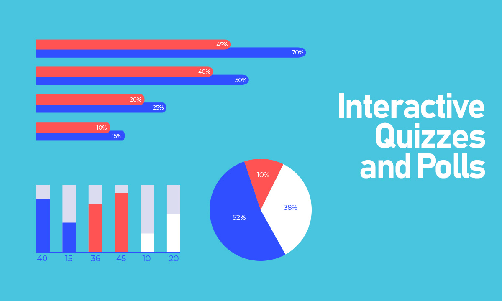

In today's fast-paced world, engaging children in meaningful learning experiences is more crucial than ever. One effective way to enhance their educational journey is through "Brain Gym Activities". These activities are designed to stimulate the brain and improve cognitive function, making learning both fun and effective. Let us look into five interactive brain activities that can significantly boost kids' learning, especially in online activity classes for kids.
1.The Alphabet Game
The Alphabet Game is a classic Brain Gym Activity that can be adapted for any subject. In this activity, children take turns naming an item or concept that starts with each letter of the alphabet. For example, for the letter "A," they might say "apple," and for "B," "ball." This game not only reinforces alphabetical order but also encourages vocabulary building and quick thinking.When implemented in online activity classes for kids, this activity can be even more engaging. Teachers can use interactive whiteboards or online tools to display the alphabet and keep track of the responses. This not only makes the activity more visually appealing but also helps maintain the student's interest and participation.
2.Simon Says with a Twist
"Simon Says" is a timeless game that can be transformed into an exciting Brain Gym Activity. The traditional rules are simple: one person gives instructions starting with "Simon says," and participants must follow them. The twist here is to incorporate educational elements. For example, instead of just saying "Simon says touch your toes," the instructions could include actions like "Simon says make a number with your fingers" or "Simon says spell a word out loud while hopping on one foot." This approach not only gets kids moving but also dynamically reinforces their learning. In virtual classes, this game can be played using video conferencing tools where the instructor gives the instructions and students follow along. It is a fantastic way to integrate physical activity with cognitive tasks, keeping students engaged and attentive.
3.Memory Matching Game
Memory games are a fantastic way to enhance cognitive skills, and they fit perfectly into the category of brain gym activities for students. For this game, students are given cards with pairs of related images or words. The goal is to find matching pairs by flipping over the cards two at a time. In virtual settings, teachers can use digital versions of this game. Various online platforms allow for the creation of customised memory-matching games that can be shared with students. This method not only keeps the activity interactive but also allows for easy tracking of each student’s progress and improvement.
4.Storytelling with a Twist
Storytelling is a powerful tool for developing creativity and language skills. To make this a Brain Gym Activity, add a twist to the traditional storytelling approach. Start a story with a single sentence and then have each student contribute a line to continue the tale. The challenge is to ensure that each line logically follows the previous one, encouraging students to think critically and creatively. In virtual classes, this activity can be conducted using breakout rooms for smaller groups or as a whole class activity. Teachers can use online collaboration tools where students type their lines into a shared document or whiteboard. This method not only enhances creativity but also fosters teamwork and communication skills among students.
5.Interactive Quizzes and Polls
Interactive quizzes and polls are excellent Brain Gym Activities that can be easily incorporated into online activity classes for kids. These activities can cover a wide range of subjects, from math and science to literature and history. The interactive nature of these quizzes keeps students engaged and allows for immediate feedback, which is crucial for effective learning. Various online platforms offer tools for creating and conducting quizzes and polls. Teachers can use these tools to create questions, set time limits, and display results in real-time. This not only makes learning more interactive but also helps in reinforcing concepts through immediate application and review.
The Importance of Brain Gym Activities
Brain Gym Activities are more than just fun and games; they play a crucial role in enhancing cognitive development and overall learning. These activities are designed to stimulate various parts of the brain, promoting better neural connections and improving cognitive functions. Let us explore why incorporating Brain Gym Activities into educational settings is so important.
Brain Gym Activities are specifically crafted to improve various cognitive functions such as memory, attention, and problem-solving skills. By engaging in activities that challenge their brains in different ways, students can strengthen these critical cognitive areas. For instance, memory games enhance recall and recognition, while activities like storytelling improve language skills and creative thinking. The diverse nature of these exercises ensures that multiple cognitive functions are targeted simultaneously, leading to more comprehensive mental development.
Many Brain Gym Activities incorporate physical movement, which is essential for developing coordination between the body and mind. Activities like "Simon Says with a Twist" not only get children moving but also require them to think critically and respond quickly. This integration of physical activity with cognitive tasks helps improve overall coordination and fine motor skills. It also makes learning more dynamic and engaging, preventing it from becoming monotonous and ensuring that students remain active and interested.
One of the most significant benefits of Brain Gym Activities is their ability to engage students in the learning process. Traditional teaching methods can sometimes be passive, leading to disengagement and lack of interest. However, Brain Activities are interactive and often involve games, teamwork, and immediate feedback. This active involvement encourages students to participate more fully in their education, fostering a more positive and motivated learning environment.
In the context of online activity classes for kids, Brain Gym Activities become even more valuable. They help bridge the gap between traditional classroom interactions and online learning. Interactive quizzes, memory games, and collaborative storytelling can all be adapted for virtual platforms, making online education more engaging and effective. By incorporating these activities, educators can ensure that students remain connected and focused, even when learning from home.
Many Brain Gym Activities also support the development of social and emotional skills. Activities that involve group participation, such as storytelling with a twist or interactive quizzes, promote teamwork, communication, and empathy. These social interactions are crucial for building relationships and developing emotional intelligence. By engaging in these activities, students learn to work together, share ideas, and support one another, contributing to a more cohesive and supportive learning community.
The Class of One: Bringing Brain Gym Activities to Virtual Learning
Elevate your child’s learning experience with The Class of One, an innovative online school that brings education to life through interactive Brain Gym activities. Our unique approach integrates these engaging exercises into virtual classes, ensuring that students stay motivated and actively involved in their learning journey from the comfort of their homes. At The Class of One, we believe that education should be dynamic, stimulating, and fun. From interactive quizzes and creative storytelling to memory-boosting games, our curriculum is designed to develop essential cognitive skills while making learning enjoyable. These Brain Activities not only keep students engaged but also enhance their focus, problem-solving abilities, and overall academic performance.